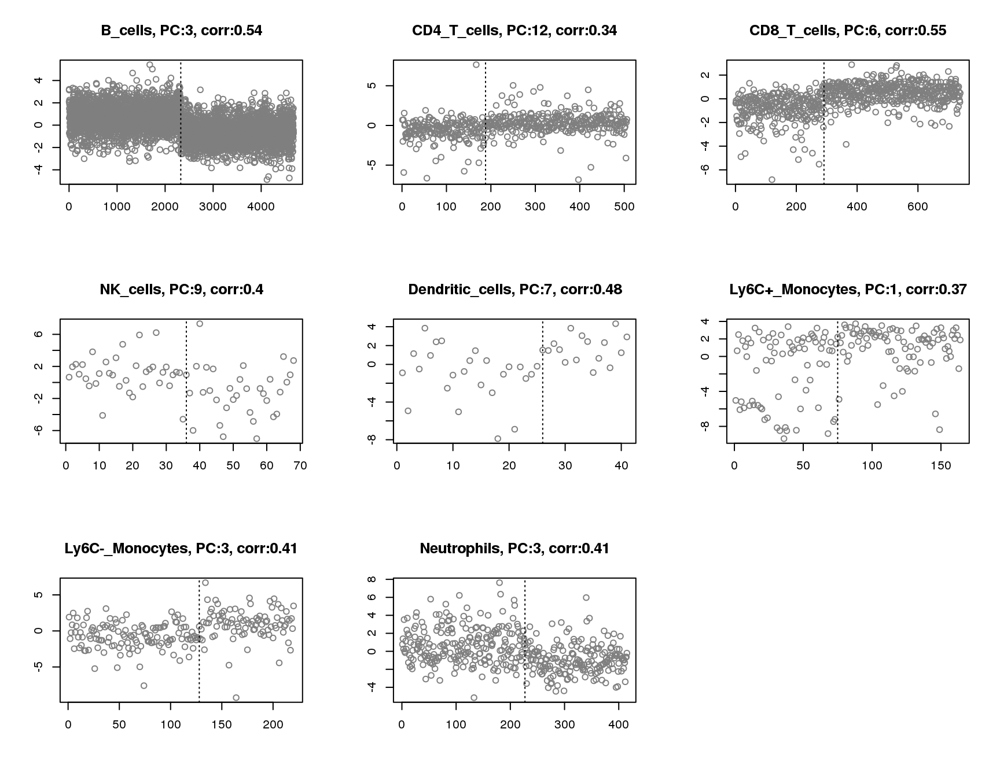
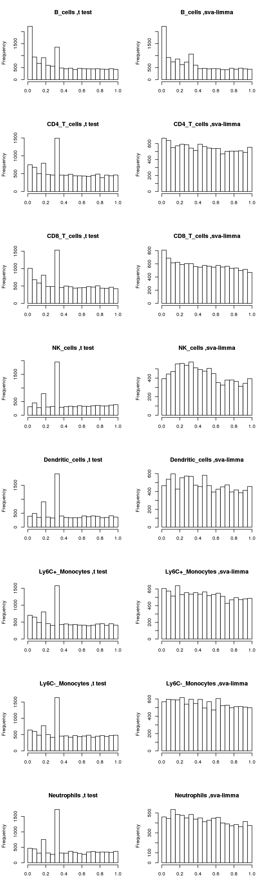

Last updated: 2020-02-26
Checks: 6 1
Knit directory: misc/
This reproducible R Markdown analysis was created with workflowr (version 1.6.0). The Checks tab describes the reproducibility checks that were applied when the results were created. The Past versions tab lists the development history.
Great! Since the R Markdown file has been committed to the Git repository, you know the exact version of the code that produced these results.
Great job! The global environment was empty. Objects defined in the global environment can affect the analysis in your R Markdown file in unknown ways. For reproduciblity it’s best to always run the code in an empty environment.
The command set.seed(20191122) was run prior to running the code in the R Markdown file. Setting a seed ensures that any results that rely on randomness, e.g. subsampling or permutations, are reproducible.
Great job! Recording the operating system, R version, and package versions is critical for reproducibility.
Nice! There were no cached chunks for this analysis, so you can be confident that you successfully produced the results during this run.
Using absolute paths to the files within your workflowr project makes it difficult for you and others to run your code on a different machine. Change the absolute path(s) below to the suggested relative path(s) to make your code more reproducible.
| absolute | relative |
|---|---|
| ~/misc/data/cytokine | data/cytokine |
Great! You are using Git for version control. Tracking code development and connecting the code version to the results is critical for reproducibility. The version displayed above was the version of the Git repository at the time these results were generated.
Note that you need to be careful to ensure that all relevant files for the analysis have been committed to Git prior to generating the results (you can use wflow_publish or wflow_git_commit). workflowr only checks the R Markdown file, but you know if there are other scripts or data files that it depends on. Below is the status of the Git repository when the results were generated:
Ignored files:
Ignored: .Rhistory
Ignored: .Rproj.user/
Untracked files:
Untracked: analysis/methylation.Rmd
Untracked: code/Rplots.pdf
Untracked: code/sccytokines.R
Untracked: data/Banknote_result.RData
Untracked: data/BreastCancer_result.RData
Untracked: data/Haberman_result.RData
Untracked: data/Ionosphere_result.RData
Untracked: data/Mice_result.RData
Untracked: data/PimaIndiansDiabetes_result.RData
Untracked: data/ROTS_results.RData
Untracked: data/Seeds_result.RData
Untracked: data/Sonar_result.RData
Untracked: data/cytokine/
Untracked: data/cytokine_normalized.RData
Untracked: data/liver_result.RData
Note that any generated files, e.g. HTML, png, CSS, etc., are not included in this status report because it is ok for generated content to have uncommitted changes.
These are the previous versions of the R Markdown and HTML files. If you’ve configured a remote Git repository (see ?wflow_git_remote), click on the hyperlinks in the table below to view them.
| File | Version | Author | Date | Message |
|---|---|---|---|---|
| Rmd | 036866d | DongyueXie | 2020-02-26 | wflow_publish(“analysis/sccytokines.Rmd”) |
| html | 0ee0474 | DongyueXie | 2020-02-26 | Build site. |
| Rmd | 2e7d137 | DongyueXie | 2020-02-26 | wflow_publish(“analysis/sccytokines.Rmd”) |
| html | 4a440d6 | DongyueXie | 2020-02-26 | Build site. |
| Rmd | d672b69 | DongyueXie | 2020-02-26 | wflow_publish(“analysis/sccytokines.Rmd”) |
| html | f9a6724 | DongyueXie | 2020-02-26 | Build site. |
| Rmd | ca23be2 | DongyueXie | 2020-02-26 | wflow_publish(“analysis/sccytokines.Rmd”) |
See if sva works when comparing two control groups in single cell cytokine study.
Focus on 8 types of cells, B_cells, CD4_T_cells, CD8_T_cells, NK_cells, Dendritic-cells, Ly6C+, Ly6C-,Neutrolphils.
########read normalized data matrix########
library(hdf5r)
library(Matrix)
f <- H5File$new("/project2/mstephens/chevrier-stephens/data/whole_cyto_normalized.h5ad",mode = "r")
print(names(f))
out <- f[["X"]]
print(h5attributes(out))
i <- out[["indices"]][]
j <- out[["indptr"]][]
x <- out[["data"]][]
library(SparseM)
X.csr = new('matrix.csr',ra=x,ja=as.integer(i+1),ia=as.integer(j+1),dimension=h5attributes(out)$h5sparse_shape)data_ann = read.csv('/project2/mstephens/chevrier-stephens/data/whole_cyto_annot.csv.gz')
library(SparseM)
#'@param p a vector of p-values
#'@param alpha fdr level
BH = function(p,alpha=0.05){
n=length(p)
i=rank(p)
idx = which(p<=(i/n*alpha))
if(length(idx)==0){
NULL
}else{
i0= max(i[idx])
rej.idx = which(i<=i0)
rej.idx
}
}
library(sva)
library(Matrix)
#perform sva for each cell type
#'@param X.csr csr sparse matrix, cells by genes.
#'@param X.ann annotations of cells
#'@param cell_types a vector of cell types
#'@param path.save path to save results
#'@param alpha fdr level
sva_cytokine = function(X.csr, cell_types, X.ann,
path.save = '~/misc/data/cytokine',alpha=0.05){
output = list()
for(cell in cell_types){
print(paste('Running',cell))
C1.idx = which((X.ann$cell_type==cell)&(X.ann$sample=='Ctrl_1'))
C2.idx = which((X.ann$cell_type==cell)&(X.ann$sample=='Ctrl_2'))
# Y is a cell by gene matrix.
Y = as.matrix(X.csr[c(C1.idx,C2.idx),])
group_idx = c(rep(1,length(C1.idx)),rep(0,length(C2.idx)))
X = model.matrix(~group_idx)
output[[cell]]$Y = as(Y,"sparseMatrix")
output[[cell]]$group_idx = group_idx
# a number of Y columns sum up to 0. remove them.
rm.idx = which(colSums(Y)==0)
output[[cell]]$rm.idx = rm.idx
# run pca
Y.pca = prcomp(Y[,-rm.idx])
pc.cor = apply(Y.pca$x,2,cor,group_idx)
print(paste(cell,'Correlation of group and PCs:',round(pc.cor[1:20],2),sep=''))
print(paste('Plot of PC',which.max(abs(pc.cor)),sep = ' '))
plot(Y.pca$x[,which.max(abs(pc.cor))],xlab='',ylab='')
output[[cell]]$pc.cor = pc.cor
output[[cell]]$pc.cor.max = Y.pca$x[,which.max(abs(pc.cor))]
#perform two sample t-test
pvalue_t = apply(Y[,-rm.idx],2,
function(z){
t.test(z[1:length(C1.idx)],z[-(1:length(C1.idx))],
alternative='two.sided')$p.value})
output[[cell]]$pvalue_t = pvalue_t
# save t results
#save(pvalue_t,file=paste(path.save,'/ttest_pvalue_ctrls_',cell,'.RData',sep = ''))
# BH adjust for fdr
rej.idx.ttest = BH(pvalue_t,alpha)
output[[cell]]$rej.idx.ttest = rej.idx.ttest
# perform sva
sva_sva = sva(t(Y[,-rm.idx]), mod = X, mod0 = X[, -2, drop = FALSE])
print(paste(cell,'#sv:',sva_sva$n.sv))
# save sva results
#save(sva_sva,file=paste(path.save,'/sva_output_ctrls_',cell,'.RData',sep = ''))
output[[cell]]$sva_sva = sva_sva
# perform limma including surrogate variable
X.sva = cbind(X, sva_sva$sv)
lmout = limma::lmFit(object = t(Y[,-rm.idx]), design = X.sva)
eout = limma::eBayes(lmout)
pvalue_sva_limma = eout$p.value[, 2]
#save(pvalue_sva_limma,file=paste(path.save,'/sva_limma_pvalue_ctrls_',cell,'.RData',sep = ''))
output[[cell]]$pvalue_sva_limma = pvalue_sva_limma
rej.idx.sva = BH(pvalue_sva_limma,alpha)
output[[cell]]$rej.idx.sva = rej.idx.sva
#de.result = list(rej.idx.t = rej.idx.t,rej.idx.sva=rej.idx.sva,rm.idx=rm.idx)
save(output,file=paste(path.save,'/DE_controls_output.RData',sep=''))
}
}
cell_types = c('B_cells', 'CD4_T_cells', 'CD8_T_cells', 'NK_cells',
'Dendritic_cells','Ly6C+_Monocytes','Ly6C-_Monocytes','Neutrophils')
sva_cytokine(X.csr,cell_types,data_ann)Number of cells in each control group:
load('data/cytokine/DE_controls_output.RData')
n.sample = c()
for(cell in names(output)){
n.sample = rbind(n.sample,c(sum(output[[cell]]$group_idx),sum(1-output[[cell]]$group_idx)))
}
rownames(n.sample) = names(output)
colnames(n.sample) = c('Ctrl-1','Ctrl-2')
knitr::kable(n.sample,caption = 'Number of samples')| Ctrl-1 | Ctrl-2 | |
|---|---|---|
| B_cells | 2326 | 2348 |
| CD4_T_cells | 188 | 318 |
| CD8_T_cells | 291 | 448 |
| NK_cells | 36 | 32 |
| Dendritic_cells | 26 | 15 |
| Ly6C+_Monocytes | 75 | 89 |
| Ly6C-_Monocytes | 128 | 92 |
| Neutrophils | 227 | 188 |
Number of genes that have at least one measurement in two control groups.
n.gene = c(14853)
for(cell in names(output)){
n.gene = rbind(n.gene,c(14853-length(output[[cell]]$rm.idx)))
}
rownames(n.gene) = c('Total',names(output))
knitr::kable(n.gene,caption = 'Number of genes considered',col.names = '#genes')| #genes | |
|---|---|
| Total | 14853 |
| B_cells | 13130 |
| CD4_T_cells | 10974 |
| CD8_T_cells | 11565 |
| NK_cells | 8816 |
| Dendritic_cells | 9512 |
| Ly6C+_Monocytes | 10568 |
| Ly6C-_Monocytes | 10962 |
| Neutrophils | 8659 |
Plot of correlations between groups and first 20 principle components.
par(mfrow=c(3,3))
for(cell in names(output)){
plot(output[[cell]]$pc.cor[1:20],xlab='PCs',ylab='corr',main=paste(cell),ylim = c(-0.5,0.6),pch=20)
abline(h=0,lty=3)
}
Plot of principle component that has maximum absolute correlation with groups for each cell. Vertical line separates two groups.
par(mfrow=c(3,3))
for(cell in names(output)){
plot(output[[cell]]$pc.cor.max,xlab='',ylab='',
main=paste(cell,', PC:',which.max(abs(output[[cell]]$pc.cor)),', corr:',round(max(abs(output[[cell]]$pc.cor)),2),sep=''),pch=1,col='grey50')
abline(v=sum(output[[cell]]$group_idx),lty=3)
}
Note: We will see a lot of p-values from t-test around 0.3-0.4. In single cell DE study, some genes are only measured once in one group while have no observation in another group. For example, gene expression in group 1 \(= (0,0,...,0,0)\) and gene expression in group 2 \(= (x,0,...,0,0)\). So in this case, unequal variance two-sample t-test always gives t-statistic = \(1\) with \(df=n_2-1\), where \(n_2\) is the number of samples in group 2. Let’s plot p-value vs df.
Suppose we have at least 5 samples in group 2, then p-value starts at 0.3739(df=4) and converges to 0.3173 as df goes to infinite.
par(mfrow=c(1,1))
plot(4:1e3,(1-pt(1,4:1e3))*2,xlab='df',ylab='p-value',main='t-statistics = 1',pch=20)
Now compare distributions of p-values from t-test and sva-limma:
par(mfrow=c(8,2))
for(cell in names(output)){
hist(output[[cell]]$pvalue_t,main=paste(cell, ',t test'),xlab='')
hist(output[[cell]]$pvalue_sva_limma,main=paste(cell, ',sva-limma'),xlab='')
}
Number of surrogate variables: based on the default method in sva - a permutation procedure originally prooposed by Buja and Eyuboglu 1992
n.sv = c()
for(cell in names(output)){
n.sv = rbind(n.sv,output[[cell]]$sva_sva$n.sv)
}
rownames(n.sv) = names(output)
colnames(n.sv) = '#sv'
knitr::kable(n.sv,caption = 'Number of surrogate variables')| #sv | |
|---|---|
| B_cells | 25 |
| CD4_T_cells | 108 |
| CD8_T_cells | 123 |
| NK_cells | 26 |
| Dendritic_cells | 9 |
| Ly6C+_Monocytes | 23 |
| Ly6C-_Monocytes | 66 |
| Neutrophils | 66 |
The number of significant genes at \(fdr=0.05\) by BH procedure.
par(mfrow=c(1,1))
n.sig = c()
for(cell in names(output)){
n.sig = rbind(n.sig,c(length(output[[cell]]$rej.idx.ttest),length(output[[cell]]$rej.idx.sva)))
}
rownames(n.sig) = names(output)
colnames(n.sig) = c('t-test','sva')
knitr::kable(n.sig,caption = 'Number of significant genes at fdr=0.05')| t-test | sva | |
|---|---|---|
| B_cells | 859 | 839 |
| CD4_T_cells | 25 | 11 |
| CD8_T_cells | 101 | 61 |
| NK_cells | 2 | 0 |
| Dendritic_cells | 0 | 0 |
| Ly6C+_Monocytes | 22 | 0 |
| Ly6C-_Monocytes | 16 | 0 |
| Neutrophils | 1 | 0 |
The number of significant genes at \(fdr=0.01\) by BH procedure.
BH = function(p,alpha=0.05){
n=length(p)
i=rank(p)
idx = which(p<=(i/n*alpha))
if(length(idx)==0){
NULL
}else{
i0= max(i[idx])
rej.idx = which(i<=i0)
rej.idx
}
}
n.sig = c()
for(cell in names(output)){
n.sig = rbind(n.sig,c(length(BH(output[[cell]]$pvalue_t,0.01)),length(BH(output[[cell]]$pvalue_sva_limma,0.01))))
}
rownames(n.sig) = names(output)
colnames(n.sig) = c('t-test','sva')
knitr::kable(n.sig,caption = 'Number of significant genes at fdr=0.01')| t-test | sva | |
|---|---|---|
| B_cells | 463 | 465 |
| CD4_T_cells | 18 | 7 |
| CD8_T_cells | 51 | 44 |
| NK_cells | 0 | 0 |
| Dendritic_cells | 0 | 0 |
| Ly6C+_Monocytes | 13 | 0 |
| Ly6C-_Monocytes | 11 | 0 |
| Neutrophils | 0 | 0 |
sessionInfo()R version 3.5.1 (2018-07-02)
Platform: x86_64-pc-linux-gnu (64-bit)
Running under: Scientific Linux 7.4 (Nitrogen)
Matrix products: default
BLAS/LAPACK: /software/openblas-0.2.19-el7-x86_64/lib/libopenblas_haswellp-r0.2.19.so
locale:
[1] LC_CTYPE=en_US.UTF-8 LC_NUMERIC=C
[3] LC_TIME=en_US.UTF-8 LC_COLLATE=en_US.UTF-8
[5] LC_MONETARY=en_US.UTF-8 LC_MESSAGES=en_US.UTF-8
[7] LC_PAPER=en_US.UTF-8 LC_NAME=C
[9] LC_ADDRESS=C LC_TELEPHONE=C
[11] LC_MEASUREMENT=en_US.UTF-8 LC_IDENTIFICATION=C
attached base packages:
[1] stats graphics grDevices utils datasets methods base
loaded via a namespace (and not attached):
[1] workflowr_1.6.0 Rcpp_1.0.2 digest_0.6.18 later_0.7.5
[5] rprojroot_1.3-2 R6_2.3.0 backports_1.1.2 git2r_0.26.1
[9] magrittr_1.5 evaluate_0.12 highr_0.7 stringi_1.2.4
[13] fs_1.3.1 promises_1.0.1 whisker_0.3-2 rmarkdown_1.10
[17] tools_3.5.1 stringr_1.3.1 glue_1.3.0 httpuv_1.4.5
[21] yaml_2.2.0 compiler_3.5.1 htmltools_0.3.6 knitr_1.20